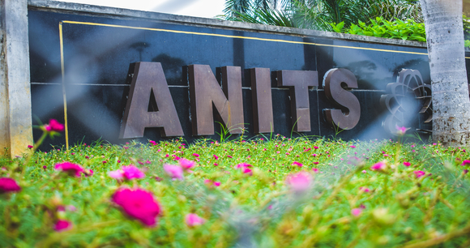
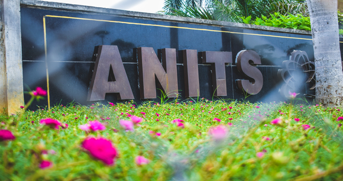
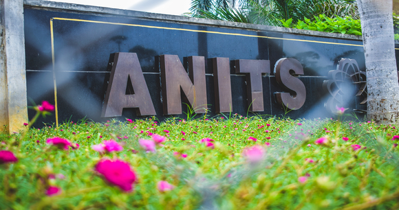
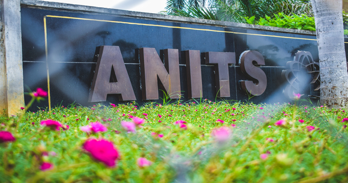

Anil Neerukonda Institute of Technology and Sciences (ANITS), was established in the Academic Year 2001–02 with the approval of the All India Council for Technology Education (AICTE), New Delhi and the Government of Andhra Pradesh and is affiliated to Andhra University (AU), Visakhapatnam. All the eligible courses are Accredited by NBA in the year 2013. It is given Permanent Affiliation in the year 2010 by Andhra University. ANITS received autonomous status in the year 2015.
The Institute is accredited by NAAC with A grade and valid up to 9 Dec 2019 with A grade. The institute CGPA is 3.01.